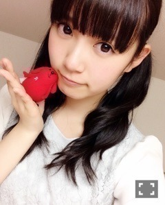
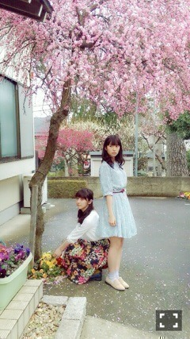
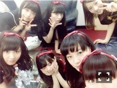
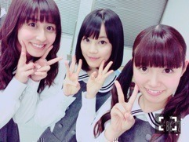
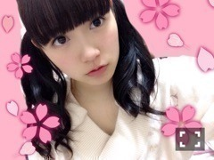

| 2015/04 04 Sat | ひめたん-OoO-その532 |

NHKラジオ第1
「らじらー！サンデー」
この春から私、
アシスタントMCとして
登場させていただくことになりました！
らじらー！サタデー&サンデー
は、この4月から始まる新番組。
wktkラヂオ学園が
リニューアルした形として
スタートします！
何が起きるかわからない！
ジェットコースターみたいに怖いけれど
楽しくてまた乗りたくなる...
土日の夜に新番組スタート！
らじらー！とは、
"ラジオする人"のこと。
ラジオを聞くことはもちろん、
ラジオを聞きながら
メールやツイッター、電話など、
いろんな形で番組に参加してもらいたい
"ラジオを楽しむ人"を増やしたい！
という番組。
サンデーのMCは
中田敦彦さん、藤森慎吾さん
（オリエンタルラジオ）、
そして隔週で私、中元日芽香が
アシスタントMCを務めます。
乃木坂46担当の日は私の他に
毎回違う乃木坂46のメンバーが
出演することになっています( ˆoˆ )
他にも声優さん、芸人さん、
様々な方が登場して
土日の夜を盛り上げます！
らじらーからの投稿がメインの
コーナーもあります
一緒に番組を作っていきましょう☆
みなさんからのおたより
お待ちしています\( ˆoˆ )/
私はラジオのレギュラー番組を
持つことが夢だったのですが
こんなに早く叶うとは......。
本当に幸せです
ありがとうございます！
ファンのみなさんからもよく
ひめたんラジオやってほしいよ～って
言ってくださっていたのが
まさか実現してしまうなんて。
私は元々「らじらー」なので
ラジオの楽しさを今度は
発信していけたらいいな( ˇωˇ )
拙い部分も多い私ですが
精一杯楽しむので、みなさん
ラジオの向こうから
応援していてくださいね♡♡
あ、ちなみに私は「センター」目指して
毎回いろんなことに挑戦します！
ちょっと......緊張しています......。
がんばるぞー！
らじらー！サタデー&サンデー
番組は4/4スタート。
私が登場するのは4/5からです！
4/5のゲストは
内田真礼さん、生駒里奈ちゃん
NHKラジオを
スマートフォンから聴く方は
NHK公式アプリ「らじるらじる」を
ダウンロードしてくださいね～＊

さて、いきなりですが
告知させてください♡
■雑誌
・3/24 月刊B.L.T.
・3/30 月刊エンタメ
・4/6 週刊ヤングマガジン
・4/6 Top Yell
・4/9 週刊ヤングジャンプ
・4/9 UTB+
・4/15 EX大衆
■テレビ
・4/16 スペースシャワーTV
乃木坂46スペシャル
・4/18 マサカメTV
■ラジオ
・4/5 乃木坂46の「の」
・4/5、19 らじらー！SUNDAY
こんなにたくさん
お知らせできるなんて(´,,•ω•,,｀)
チェックするの
大変かもしれませんが
よろしくお願いします♡
月刊エンタメオフショット


去年の秋くらいに
まあやとペアで登場した
月刊エンタメのペアグラビア。
今回はちーちゃんと♡
前回の撮影がすごく楽しかったから
また呼んでいただけて幸せ～
しかも仲良しちーちゃんとだよ( ˇωˇ )
ふたりとも高校卒業という
節目のタイミングでの
今回の撮影ということで
高校生最後の制服と
背伸びした大人っぽいお洋服とで
違った表情に見えるのが不思議です
どちらの顔も18歳なのにね。
インタビューページも
ぜひ読んでほしい！
二期生昇格組の特集もありますよ☆

報告遅くなりましたが
昨日まで4日間
乃木團のライブとのぎ天ロケのために
台湾に行ってきました\( ˆoˆ )/
乃木團海外進出してしまった～～
詳細はのぎ天のオンエアが終わってから
ゆっくりお話しようと思うのですが
乃木團としてまた
ステージに立てたことが
嬉しかったですし
いつも応援してくださる
台湾のファンのみなさんに
私たちから会いに行けたことが
よかったなぁ( ˇωˇ )
台湾のみなさんは本当にあたたかくて
がんばって日本語で私たちと
コミュニケーションを図ろうと
してくださったり
お店に行ったらいろんなところで
サービスしてもらっちゃったり♡
言葉が通じなくても
伝わる気持ちってあるんだなってのは
海を越えてみないとわからないよね～
台湾のみなさんの優しさに触れた
素敵な時間でした。
まだまだやらなければいけないことが
たくさんあるなと
身を持って感じました。
もっとスキルを磨きたい！
もっとレパートリーを増やしたい！
絶対また成長して凱旋ライブします！

乃木どこ 中3組の休日。
いくちゃん、ちーちゃんと3人で
高校生らしく渋谷を
散策しました(＊'ω`＊)
いつかちーちゃんに
この3人だとひめたんが一番オトナだと
言われたことがあるけれど
うん、そうみたい！笑
ふたりはたまに
独特なワールドを創造し出すので
私はいつも一歩、いろんな意味で一歩
引いて見てる⊂( ˆoˆ )⊃
でもそんな2人が大好きだし
性格も全然違うようなのに
なぜか一緒にいて落ち着くんだ～
私服で3人とも
ぴんくのコート着てたんだけど
あれたまたまなんだよ！
あ、3人の共通点をひとつ挙げるなら
みんな歌が大好きだ(＊^ω^＊)

日本の桜が見たいよ～
質問返し・ひめたん46は
次回やるね(´・ω・｀)
今日明日は握手会～＊
土曜日は名古屋、日曜日は京都！
来てくださる方は
楽しみにしています(´｡･v･｡｀)
今日はアルバムの
スペシャル握手会てことで
歌衣装 何着ようかな～
そしてせいたん最後のアイドル姿
しっかり目に焼き付けます。
(＊´・ω・＊)
コメント(1098)
2015/04/04 08:00